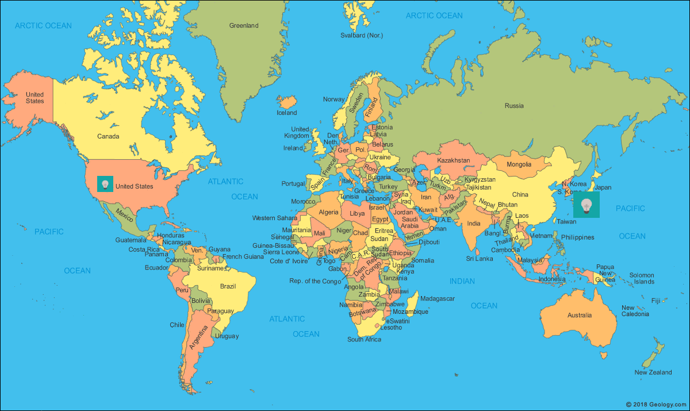

Overview
My name is Bradley Peatross. I gew-up in Utah, West Jordan mostly. I went to High School at Copper Hills before I joined the Marine Corps.
In the Marines, after boot-camp, Marine Combat Training, and MOS School I was sent to Okinawa, Japan. From there I deployed to various other locations to include Iraq durring 2004 when fighting was the fiercest and Saddam Huessein was captured. As well as other more enjoyable locations such as Austrailia and Thailand as well as others. My job in the Marines was a Tactical Network Specialist, I helped with most Tactical IT gear on deployments as well as support garrision infrustruture. Which helped me further my career after the Marines in IT as a contractor with the government and then as a government civilian where I am currently employed at Hill AFB.
I've always been interested in technology and it has helped me with my career but, I can't always go in the path that I want, because I have to choose to most stable path for myself and my family. That being said I have always had interest in Artificial Intelligence, but I haven't had the chance to dedicate to this path. Now I'm going back to school for a Computer Scince degree with a plan to pursue follow on research in an institute or environment that would be conducive to this technology. And maybe one day working in this field.
Family
While I lived in Japan I went to school to learn Japanese as well as spent my time dating local Japanese girls to practice my Japanese.
Durring this time I had a few girl friends, but stayed with and later married my wife now. Together we had three kids together, two boys and one girl
While living in Japan I wanted my kids to grow up in America where the economy is better than Japan and where we could live in more acomidating houses then the small apartments or small houses that are common in Japan. So I looked for a Job in America, worked on my wifes VISA and moved back.
Here in America my Wife teaches the Japanese instrument call the Koto to local students and my kids have adjusted well to local school and enjoy visiting the Rocky Mountains
Okinawan Koto
Video Games
Rocky Mountains
Work
Professional Summary
I am a Senior IT project manager/engineer with 15 years of experience. My knowledge and familiarity in the IT industry is diverse from the broad range of exposure to unique requirements and solutions from the positions I’ve supported. I Excel in complex IT technologies, driven by motivation from interest in technology and its application. I am accustomed to professional representation of the organization I support, working with customers and keeping mission focus. I enjoy keeping abreast of emerging technologies and researches new strategies for enjoyment, success and efficiency.
Certifications and Educations:
| • Certified Information Systems Security Progessional (CISSP) | Current (June 2014) |
| • Red Hat Certified System Administrator (RHCSA) | March 2017 |
| • Certified Ethical Hacker (CEH) | May 2015 |
| • Server Administrator on Windows Server 2008 | September 2012 |
| ∘ Windows Server 2008 Server Administrator | September 2012 |
| ∘ Windows Server 2008 Active Directory | August 2012 |
| ∘ Windows Server 2008 Network Infrastructure | August 2012 |
| • VMware Certified Professional (VCP 4) | NOvember 2011 |
| • Configuring Microsoft Office SharePoint Server 2007 | August 2009 |
| • CompTIA A+ | May 2012 |
| • CompTIA Security+ | September 2008 |
| • CompTIA Network+ | July 2008 |
| • United States Marine Corps technical classes | January 2003-December 2005 |
Professional Experience
December 2016 – Present: Installations Senior IT Specialist for DISA GS-13. 40 hours a week, Supervisor Matt Nieman: As a team lead, I manage IT installation projects for DISA located at Hill Air Force Base Ogden Utah. In this position I work with my team to integrate, install and configure all IT equipment into both classified and unclassified enterprise datacenters. Installs are managed through thorough change management ITIL work flows in-which my team works with vendors, customers, stakeholders, and technicians. Throughout this process my team provides support, recommendations, supervision, and physical installation and configuration with member entities; with up-to-date install reports, that ensures all entities have current implementation statuses. These installs are handled and adjusted individually based on applicable varying installation requirements and documented for repeatable implementation or application in relatable, but different installs. As team lead I monitor team productivity and prioritization of tasks while ensuing team-members understand our mission and their duties. I ensure team-members are up-to-date on organizational and industry standards while maintaining current documentation used for guidance, training and adherence.
June 2013 – December 2016: Enterprise Directory Messaging (EDM) Lead and Enterprise Services Team Lead GS-12 for the Marine Corps Network Operations Security Center (MCNOSC) West Pacific (WestPAC) Detachment. As Team lead I was responsible for managing enterprise services, personnel, resources/inventory while upholding DoD security standards in the West Pacific (WestPAC) as a detachment of MCNOSC for the Marine Corps Enterprise Network (MCEN). This Entailed upholding standards for a large scale physical and virtual architecture, storage systems and network/transport equipment, hosted in an enterprise data center. Practiced structured change management with thorough documentation and reporting through Enterprise Remedy IT management system. The WestPAC region includes garrison locations in Japan, Korea, and deployed locations in Asia. Communicated in multiple time zones with Marine Corps units, customers and MCNOSC headquarters in the United States.
August 2010 – June 2013: Senior Systems Administrator GS-11, U.S. Marine Corps, Okinawa Japan Managed a VMware server farm and backup solution. Planned, tested and performed an upgrade of hardware and software from VMware 3.0 to 4.1 and again to 5.0 seamlessly. Reformed and upgraded the backup solution for a more effective solution. Technologies backed up and supported: SharePoint, SQL, and Windows Server 2003/2008 with BackupExec 12/12.5/2010. In accordance with IA security standards and with support from local IA personnel implemented security configurations specific to relevant systems and manage updates through a WSUS server. Supporting operations provided problem/incident management through resolution of complex issues.
September 2009 – August 2010: Senior SharePoint Administrator, Smartronix, Okinawa Japan: With personnel initiative identified this opportunity and delivered this contract to the company by meeting with the customer and identified a solution to meet their requirements for the First of the First Special Forces Group / Airborne (1/1 SFG (A)). Increasing productivity by translating customer requirements into more efficient collaborative operations on SharePoint as well as integrating tightly with the Microsoft Office Client Stack (2007) meeting customer satisfaction. oversaw the development of technical data, estimates, and statistics to assist upper management in determining goals and work objectives. Evaluated command needs for IT systems and selected appropriate hardware and software to meet operational needs.
April 2007 – September 2009: Senior Systems Administrator / SharePoint Administrator, Smartronix, Okinawa Japan: Implemented a Microsoft Office SharePoint Server (MOSS) 2007 on a Web/SQL 2000/Windows 2003 server and Windows SharePoint Services (WSS) 2.0 /3.0. From test environment to a full production environment with 600 sites and over 7,000 users averaging 5.6 GB of bandwidth daily and conducted upgrades from WSS 2.0 → 3.0 → MOSS seamlessly to the customer.
January 2007-April 2007: Systems Administrator / Virtual Infrastructure Technician, Smartronix, Falluja, Iraq: In a combat environment, conducted data migrations from one Tactical Collaborative Work Suite (TCWS) for one departing Marine unit to another TCWS for an arriving Marine unit. Utilizing Vmware Services transferred: Microsoft Windows Server 2003, SharePoint, SQL Server, Exchange 2003,IIS, CITRIX Presentation Server, Symantec Antivirus Server, Backup Exec, and Altiris Server Management.
October 2006 to January 2007: Hardware Technician / Virtual Infrastructure Technician, Smartronix, Okinawa Japan: Installed all hardware and Virtual Infrastructure for the Collaborative Information Environment (CIE) project on three separate networks. SharePoint servers, 2003 Domain controllers, 2003 Exchange servers, SQL servers and Live Communication servers.
December 2005 to October 2006: Systems Administration, ITS Corporation, Okinawa, Japan: Administered a network with approximately 2,500 users and 1,500 computers. This includes security upgrades, maintenance and backups, configuration of the login script. Managed systems Windows 2000, Windows 2000 server, Windows NT, Exchange server, DNS configuration, WINS Configuration, RAS, VPN Server, and Veritas backup Server.
January 2003 to December 2005: Systems Administrator, U.S. Marine Corps, Okinawa, Japan: Systems administrator for various Marine Corps networks, both classified and unclassified, with more than 5000 users. Managed the login scripts, web-based databases using SQL, Windows Server NT, 2000, 2003, DNS, WINS configuration, VPN servers, RAS servers, and Exchange Servers. Implemented and maintained backups using Veritas as well as worked as a Help Desk agent which included: managed accounts, computers, encryption devices, IIS and Outlook Web Access. While working for the U.S. Marine Corps supported IT operations while deployed to Iraq, and Thailand.
Hobbies
I work full time, go to school full time and I have a family so my free time is very limited, but in those times I enjoy hiking with my family, listening to audio books, watching T.V. Playing sports like Soccer or BaseBall, teaching my kids different technologies, and playing games with my family
Since my family and I have moved to Utah the Rocky Mountains have been a very drastic difference from the tropical island of Okinawa from where we moved from. The mountains are beautiful, just like the oceans are beautiful on Okinawa. We frequently hike different trails and enjoy the excersice, nature and the views.
I also enjoy sharing my interest in technology with my kids. I have taught my oldest the beginings of Java and Python and we build projects together on a raspberry pi, we have only done simple projects so far and it is fun.
My Kids and I have always been interested in Soccer and we play together as well as on teams when we have the chance. The numerous parks in Utah have been great for this as well. When we are tired of Soccer its alwasy fun to throw around a baseball too.
Interest in technology frequently overlapps into video games and I have setup three networked computers in my house so that we can all play games together, this has proven to be very fun for all, we just have to keep a watch on the time.
When relaxing I enjoy watching T.V. and listening to audio books. This is wonderful when I want to be quiet and be as lazy as possible as well as spark my imagination
Assignments
- Assignment A1-2 Answers
- Assignment A1-2 New You Personal Training
- Assignment A2 Image Comparison
- Assignment A3 My Schedule and Form
- Assignment A4 CSS Styles
- Assignment A5 Weber Page and CSS Styles
- Assignment A5 CSS3 Page
- Assignment A6 Math Application with JavaScript
- Assignment A7 JavaScript Examples
- Assignment A8 Javascript vote page
- Assignment A9 Javascript form validation